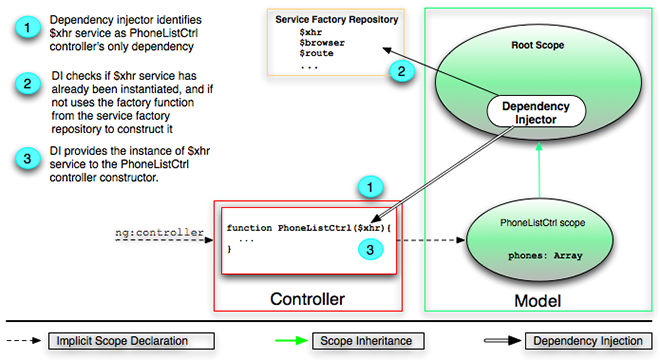

XHR和依赖注入
到现在为止，我们使用是硬编码的三条手机记录数据集。现在我们使用AngularJS一个内置服务$http来获取一个更大的手机记录数据集。我们将使用AngularJS的依赖注入（dependency injection (DI)）功能来为PhoneListCtrl控制器提供这个AngularJS服务。
请重置工作目录：
git checkout -f step-5刷新浏览器，你现在应该能看到一个20部手机的列表。
步骤4和步骤5之间最重要的不同在下面列出。你可以在GitHub里看到完整的差别。
数据
你项目当中的app/phones/phones.json文件是一个数据集，它以JSON格式存储了一张更大的手机列表。
下面是这个文件的一个样例：
[
{
"age": 13,
"id": "motorola-defy-with-motoblur",
"name": "Motorola DEFY\u2122 with MOTOBLUR\u2122",
"snippet": "Are you ready for everything life throws your way?"
...
},
...
]控制器
我们在控制器中使用AngularJS服务$http向你的Web服务器发起一个HTTP请求，以此从app/phones/phones.json文件中获取数据。$http仅仅是AngularJS众多内建服务中之一，这些服务可以处理一些Web应用的通用操作。AngularJS能将这些服务注入到任何你需要它们的地方。
服务是通过AngularJS的依赖注入DI子系统来管理的。依赖注入服务可以使你的Web应用良好构建（比如分离表现层、数据和控制三者的部件）并且松耦合（一个部件自己不需要解决部件之间的依赖问题，它们都被DI子系统所处理）。
app/js/controllers.js
function PhoneListCtrl($scope, $http) {
$http.get('phones/phones.json').success(function(data) {
$scope.phones = data;
});
$scope.orderProp = 'age';
}
//PhoneListCtrl.$inject = ['$scope', '$http'];$http向Web服务器发起一个HTTP GET请求，索取phone/phones.json（注意，url是相对于我们的index.html文件的）。服务器用json文件中的数据作为响应。（这个响应或许是实时从后端服务器动态产生的。但是对于浏览器来说，它们看起来都是一样的。为了简单起见，我们在教程里面简单地使用了一个json文件。）
$http服务用success返回[对象应答][ng.$q]。当异步响应到达时，用这个对象应答函数来处理服务器响应的数据，并且把数据赋值给作用域的phones数据模型。注意到AngularJS会自动检测到这个json应答，并且已经为我们解析出来了！
为了使用AngularJS的服务，你只需要在控制器的构造函数里面作为参数声明出所需服务的名字，就像这样：
function PhoneListCtrl($scope, $http) {...}当控制器构造的时候，AngularJS的依赖注入器会将这些服务注入到你的控制器中。当然，依赖注入器也会处理所需服务可能存在的任何传递性依赖（一个服务通常会依赖于其他的服务）。
注意到参数名字非常重要，因为注入器会用他们去寻找相应的依赖。

'$'前缀命名习惯
你可以创建自己的服务，实际上我们在步骤11就会学习到它。作为一个命名习惯，AngularJS内建服务，作用域方法，以及一些其他的AngularJS API都在名字前面使用一个‘$’前缀。不要使用‘$’前缀来命名你自己的服务和模型，否则可能会产生名字冲突。
关于JS压缩
由于AngularJS是通过控制器构造函数的参数名字来推断依赖服务名称的。所以如果你要压缩PhoneListCtrl控制器的JS代码，它所有的参数也同时会被压缩，这时候依赖注入系统就不能正确的识别出服务了。
为了克服压缩引起的问题，只要在控制器函数里面给$inject属性赋值一个依赖服务标识符的数组，就像被注释掉那段最后一行那样：
PhoneListCtrl.$inject = ['$scope', '$http'];另一种方法也可以用来指定依赖列表并且避免压缩问题——使用Javascript数组方式构造控制器：把要注入的服务放到一个字符串数组（代表依赖的名字）里，数组最后一个元素是控制器的方法函数：
var PhoneListCtrl = ['$scope', '$http', function($scope, $http) { /* constructor body */ }];上面提到的两种方法都能和AngularJS可注入的任何函数完美协作，要选哪一种方式完全取决于你们项目的编程风格，建议使用数组方式。
测试
test/unit/controllerSpec.js：
由于我们现在开始使用依赖注入，并且我们的控制器也含有了许多依赖服务，所以为我们的控制器构造测试就有一点小小的复杂了。我们需要使用new操作并且提供给构造器包括$http的一些伪实现。然而，我们推荐的方法（而且更加简单噢）是在测试环境下创建一个控制器，使用的方法和AngularJS在产品代码于下面的场景下做的一样：
describe('PhoneCat controllers', function() {
describe('PhoneListCtrl', function(){
var scope, ctrl, $httpBackend;
beforeEach(inject(function(_$httpBackend_, $rootScope, $controller) {
$httpBackend = _$httpBackend_;
$httpBackend.expectGET('phones/phones.json').
respond([{name: 'Nexus S'}, {name: 'Motorola DROID'}]);
scope = $rootScope.$new();
ctrl = $controller(PhoneListCtrl, {$scope: scope});
}));注意：因为我们在测试环境中加载了Jasmine和angular-mock.js，我们有了两个辅助方法，module和inject，来帮助我们获得和配置注入器。
用如下方法，我们在测试环境中创建一个控制器：
-
我们使用
inject方法将$rootScope，$controller和$httpBackend服务实例注入到Jasmine的beforeEach函数里。这些实例都来自一个注入器，但是这个注入器在每一个测试内部都会被重新创建。这样保证了每一个测试都从一个周知的起始点开始，并且每一个测试都和其他测试相互独立。 -
调用
$rootScope.$new()来为我们的控制器创建一个新的作用域。 -
PhoneListCtrl函数和刚创建的作用域作为参数，传递给已注入的$controller函数。
由于我们现在的代码在创建PhoneListCtrl子作用域之前，于控制器中使用$http服务获取了手机列表数据，我们需要告诉测试套件等待一个从控制器来的请求。我们可以这样做：
-
将请求服务
$httpBackend注入到我们的beforeEach函数中。这是这个服务的一个伪版本，这样做在产品环境中有助于处理所有的XHR和JSONP请求。服务的伪版本允许你不用考虑原生API和全局状态——随便一个都能构成测试的噩梦——就可以写测试。 -
使用
$httpBackend.expectGET方法来告诉$httpBackend服务来等待一个HTTP请求，并且告诉它如何对其进行响应。注意到，当我们调用$httpBackend.flush方法之前，响应是不会被发出的。
现在，
it('should create "phones" model with 2 phones fetched from xhr', function() {
expect(scope.phones).toBeUndefined();
$httpBackend.flush();
expect(scope.phones).toEqual([{name: 'Nexus S'},
{name: 'Motorola DROID'}]);
});-
在浏览器里，我们调用
$httpBackend.flush()来清空（flush）请求队列。这样会使得$http服务返回的promise（什么是promise请参见这里）能够被解释成规范的应答。 -
我们设置一些断言，来验证手机数据模型已经在作用域里了。
最终，我们验证orderProp的默认值被正确设置：
it('should set the default value of orderProp model', function() {
expect(scope.orderProp).toBe('age');
});
;执行./scripts/test.sh脚本来运行测试，你应该会看到如下输出：
Chrome: Runner reset.
..
Total 2 tests (Passed: 2; Fails: 0; Errors: 0) (3.00 ms)
Chrome 19.0.1084.36 Mac OS: Run 2 tests (Passed: 2; Fails: 0; Errors 0) (3.00 ms)练习
-
在index.html末尾添加一个
{{phones | json}}绑定，观察json格式的手机列表。 -
在
PhoneListCtrl控制器中，把HTTP应答预处理一下，使得只显示手机列表的前五个。在$http回调函数里面使用如下代码：$scope.phones = data.splice(0, 5);
总结
现在你应该感觉得到使用AngularJS的服务是多么的容易（这都要归功于AngularJS服务的依赖注入机制），转到链接与图片模板，你会为手机添加缩略图和链接。